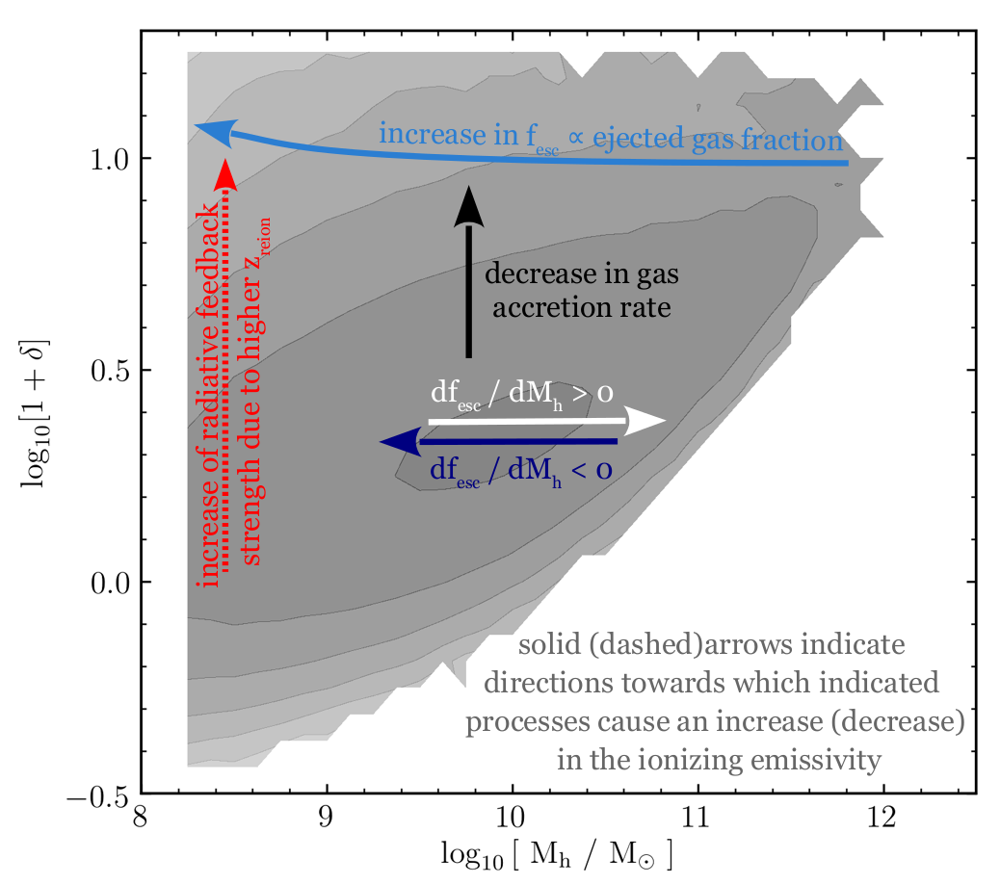
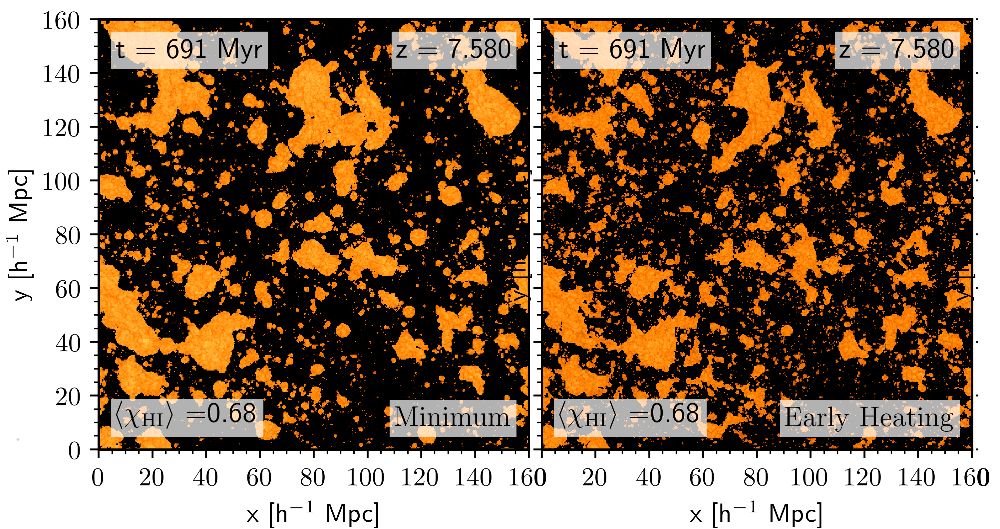

Research interests: The Universe in Its First Billion Years
My research focuses on the formation and evolution of early galaxies during the first billion years of cosmic history, particularly in light of new insights from the James Webb Space Telescope (JWST). I am interested in understanding the physical processes that regulate star formation and chemical enrichment in these galaxies, such as gas accretion, stellar feedback, and variations in the stellar initial mass function (IMF).
- What were the properties of the first galaxies, and how did their massive stars drive the abundance of bright early galaxies?
- What imprints did the first galaxies leave on the heating and ionisation morphologies of the intergalactic medium during Cosmic Dawn and the Epoch of Reionisation?
To address these questions, I use semi-numerical galaxy evolution and reionisation models coupled with cosmological simulations to predict both galaxy observables (UV luminosity functions, emission lines such as Lyman-α) and the cosmic 21cm signal from the intergalactic medium. I also explore how synergising galaxy surveys with upcoming 21cm experiments can reveal the nature of the first galaxies and the physical processes shaping them.
Research highlights
ASTRAEUS X: Indications of a top-heavy initial mass function in highly star-forming galaxies from JWST observations at z>10
(Hutter, Cueto, Dayal, Gottlöber, Trebitsch, Yepes, 2025)
JWST has revealed an unexpectedly large number of bright galaxy candidates at z > 10. To explain these observations, we explored how the stellar initial mass function (IMF) might vary with galaxy properties and redshift. We tested an IMF that becomes increasingly top-heavy in gas-rich galaxies with high specific star formation rates. Implemented within the ASTRAEUS framework, this evolving IMF successfully reproduces the observed galaxy counts at z = 5–15. Crucially, the luminosity boost is strongest in galaxies where star formation is not strongly limited by supernova feedback. While the evolving IMF has little effect on the late stages of reionisation, it triggers an earlier onset, potentially explaining how some z ~ 13 galaxies already show observable Lyman-alpha emission.
Astraeus IX: The impact of an evolving stellar initial mass function on early galaxies and reionisation
(Cueto, Hutter, Dayal, Gottlöber, Heintz, Mason, Trebitsch, Yepes, 2024)
Observations with JWST have revealed an unexpected high abundance of bright z>10 galaxy candidates. We explore whether a stellar initial mass function (IMF) that becomes increasingly top-heavy towards higher redshifts and lower gas-phase metallicities results in a higher abundance of bright objects in the early universe and how it affects the evolution of galaxy properties compared to a constant IMF. We incorporate such an evolving IMF into the ASTRAEUS framework that couples galaxy evolution and reionisation in the first billion years. Our implementation accounts for the IMF dependence of supernova feedback, metal enrichment, ionising and ultraviolet radiation emission. We conduct two simulations: one with a Salpeter IMF and one with the evolving IMF. Our results suggest that a top-heavier IMF alone is unlikely to explain the higher abundance of bright z>10 sources, since the lower mass-to-light ratio is counteracted by the stronger stellar feedback.
On the general nature of 21cm-Lyman-alpha emitter cross-correlations during reionization
(Hutter, Heneka, Dayal, Gottlöber, Mesinger, Trebitsch, Yepes, 2023)
We examine how the cross-correlation functions between 21-cm emission from neutral hydrogen and Lyman-alpha radiation-emitting galaxies (Lyman-alpha emitters) depend on the reionisation history, topology, and simulated volume. We develop an analytic expression for the 21cm-LAE cross-correlation function and compare it with results from ASTRAEUS and 21cmFAST reionisation simulations covering a physically plausible range of scenarios where either the low-mass or more massive galaxies drive reionisation. Our results show that the small-scale cross-correlation amplitude depends on the intergalactic medium's average neutral hydrogen fraction and spin-temperature weighted overdensity in neutral regions, while the cross-correlation function's inversion point traces the peak of the size distribution of ionised regions around Lyman-alpha emitters. This makes 21cm-LAE cross-correlations sensitive to both the reionisation history and topology.
Astraeus VIII: A new framework for Lyman-alpha emitters applied to different reionisation scenarios
(Hutter, Trebitsch, Dayal, Gottlöber, Yepes, Legrand, 2023)
We extend the ASTRAEUS simulations by a new model for Lyman-alpha emitters for the two physically plausible bracketing scenarios of the escape fraction of ionising photons increasing and decreasing with rising halo mass. Our new model parameterises results from numerical Lyman-alpha radiative transfer simulations and introduces novel analytic Lyman-alpha line profile models that describe the surrounding interstellar medium as outflowing dusty gas clumps, with one of them relating the escape fraction of Lyman-alpha photons to that of ionising photons. We find that during reionisation Lyman-alpha emitters are relatively massive galaxies residing in overdense and highly ionised regions. For this reason, their spatial distribution is primarily sensitive to the global ionisation fraction and only eakly to the ionisation topology or a halo mass dependent escape fraction of ionising photons.
Astraeus III: The environment and physical properties of reionization sources
(Hutter, Dayal, Legrand, Gottlöber, Yepes 2021)

We use the ASTRAEUS simulations to investigate how strongly the galaxy populations driving reionization are determined by the nature of radiative feedback from reionization and the escape fraction of ionizing photons from galaxies. We focus on two key quantities describing galaxy populations, the galaxies' gravitational potentials and their environment/location in the cosmic web.
Astraeus I: the interplay between galaxy formation and reionization
(Hutter, Dayal, Yepes, Gottlöber, Legrand, Ucci 2021)

This paper introduces my self-consistent model of galaxy evolution and reionization, ASTRAEUS (seminumerical rAdiative tranSfer coupling of galaxy formaTion and Reionization in N-body dArk mattEr simUlationS), which couples a state-of-the-art N-body simulation with the semi-analytical galaxy evolution DELPHI and my seminumerical reionization scheme CIFOG. ASTRAEUS includes all the key processes of galaxy formation and evolution (including accretion, mergers, supernova, and radiative feedback) and follows the time and spatial evolution of the ionized regions in the intergalactic medium (IGM). We explore the impact of different radiative feedback models, ranging from a weak and delayed to a strong and immediate reduction of gas mass available for star formation, on the star formation histories of galaxies and the ionization topology.
The 21cm bispectrum during reionization: a tracer of the ionization topology
(Hutter, Watkinson, Seiler, Dayal, Sinha, Croton 2020)

We analyse the link between characteristics in the 21cm bispectrum during reionization and the ionization topology by using three different reionization scenarios from Seiler et al. 2019 that differ in their trends of the ionizing escape fractions with the underlying galaxy properties (i.e. the ionizing escape fraction effectively decreasing, being constant, or increasing with halo mass). From squeezed to stretched triangles, we compute the 21cm bispectra with Polyspectrum and find the sign change in the 21cm bispectrum to be sensitive to the the size distribution of the ionized and neutral regions throughout reionization.
Astro 2020: A proposal to exploit galaxy-21cm synergies to shed light on the epoch of reionization
(Hutter et al. 2019)
This white paper outlines the benefits of synergizing WFIRST, Subaru Hyper Suprime-Cam or other >25m-class telescopes galaxy observations with SKA 21cm measurements to constrain the nature of reionization (ionization history and topology) and its sources.
The escape fraction of ionizing photons during the epoch of reionization: observability with the SKA
(Seiler, Hutter, Sinha, Croton 2019)
This paper introduces the RSAGE model that self-consistently couples the semi-analytical galaxy evolution model SAGE to my semi-numerical reionization scheme CIFOG . Furthermore, we explore how physically motivated functional forms of the escape fraction of ionizing photons from galaxies, i.e. linking the ionizing escape fraction to galaxy properties, affect the evolution of ionized hydrogen within the intergalactic medium and the ionization topology. We find that the large-scale power in the power spectrum of the 21cm signal provides the most sensitive tracer of the sizes of the larger ionized regions that upcoming 21cm surveys with SKA will detect.
Survey parameters for detecting 21cm-lae cross correlations with ska
(Hutter, Trott, Dayal 2018)

21cm-LAE cross correlations can provide a relative robust measurements of the IGM neutral hydrogen fraction during reionization, but low observational uncertainties will be key for detecting this cross correlation signal. However, the reduction of the uncertainties arising from the 21cm signal measurements and the LAE observations favour opposite survey designs. While the uncertainties in the 21cm signal detection are reduced by larger survey volumes, the shot noise arising from the finite number of LAEs decreases with the survey limiting Lyα luminosity, the faintest detectable Lyα luminosity, demanding for deeper observations. In this paper, we pursue the question of which survey design (i.e. survey volume versus limiting Lyα luminosity) would be optimal and feasible to minimise the 21cm-LAE cross correlation uncertainties.
The accuracy of seminumerical reionization models in comparison with radiative transfer
(Hutter 2018)

I have developed a modular seminumerical code that computes the time and spatially dependent ionization of neutral hydrogen, neutral and single-ionized helium in the intergalactic medium. My model accounts also for recombinations and provides different descriptions for the photoionization rate that are used to calculate the residual HI fraction in ionized regions. In this paper I compare different seminumerical reionization schemes to a radiative transfer simulation: In contrast to previous comparison projects, I do not adjust the ionizing emissivity in my seminumerical scheme to reproduce the redshift evolution of the RT simulation, but derive it directly from the RT simulation spectra. This comparison highlights the limitations of these seminumerical reionization models in constraining ionizing-emissivity sensitive parameters in galaxy formation.
Exploring 21cm-lyα emitter synergies for ska
(Hutter, Dayal, Müller, Trott 2017)

We study the signatures of reionization and ionizing properties of early galaxies in the cross-correlations between the 21 cm emission from the spin-flip transition of neutral hydrogen and the underlying galaxy population. With LAEs occupying the densest and most-ionized regions, the anti-correlation between the LAEs and the 21 cm emission is the strongest and provides an indicator of the ionization level of the intergalactic medium that will be detectable with SKA. We also find that detecting a lower 21cm brightness temperature (by about 2-10 mK) in the densest regions (≳2 arcmin scales) hosting LAEs, compared to lower-density regions devoid of LAEs, is a measurable tracing an inside-out reionization topology.